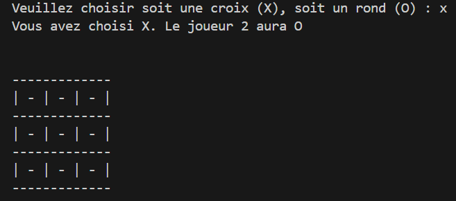

Conception
La conception du jeu **Morpion** s’est appuyée sur :
- Une permettant aux joueurs de se concentrer pleinement sur la partie.
- Une logique simple basée sur les règles classiques du jeu de Morpion, où deux joueurs s’affrontent pour aligner trois symboles.
- Un système de gestion des tours et des conditions de victoire (lignes, colonnes, diagonales) ainsi qu’une vérification automatique pour déclarer un gagnant ou un match nul.

Contexte de Réalisation
Ce projet a été réalisé dans le cadre de ma formation en Dévelopemment logiciel. Il avait pour objectif :
- D’acquérir des compétences en développement de jeux interactifs avec une logique simple.
- De mettre en œuvre une gestion de projet agile, en utilisant Trello pour organiser les différentes étapes de développement.
- De pratiquer le développement collaboratif avec GitHub pour gérer le code source et la versioning du projet.

Technologies Utilisées
Le projet Morpion a été réalisé dans le cadre de ma formation en développement web et a pour objectif de mettre en pratique les compétences acquises en développement front-end et en logique de programmation. Voici les objectifs spécifiques de ce projet :
- Apprentissage de la gestion de projets :
La gestion du projet s'est faite à l'aide de Trello, où j'ai organisé les tâches à réaliser, les deadlines, et les étapes de développement. Ce fut une excellente manière de suivre l'avancement du projet et de rester organisé.
- Utilisation de GitHub pour la gestion de version :
GitHub a été utilisé pour gérer le code source du projet, collaborer, et maintenir un historique des modifications. Chaque fonctionnalité développée a été suivie par un commit, ce qui m'a permis de revenir à une version antérieure du code en cas de besoin.
- Amélioration de la logique algorithmique :
La création du jeu a nécessité la mise en place d'algorithmes pour gérer les tours des joueurs, vérifier les conditions de victoire, et gérer les erreurs d'entrée.
- Développement itératif :
Le projet a été développé de manière itérative, en commençant par la mise en place de la logique du jeu en
Python.
.png)
Ce que j'ai réalisé
Voici les tâches spécifiques que j’ai menées à bien pour développer le jeu Morpion :
- Création de la logique du jeu : Développement des règles du jeu, gestion des tours des joueurs, vérification des conditions de victoire (lignes, colonnes, diagonales), et détection des matchs nuls.
- Développement de l'interface utilisateur : Mise en place d'une interface simple et claire pour l'interaction avec l'utilisateur pour les interactions dynamiques.
- Gestion des erreurs et des entrées utilisateur : Mise en place de vérifications pour garantir que l'utilisateur entre une position valide et qu'il n'y a pas de double-sélection sur une même case.
- Optimisation du déroulement du jeu : Développement itératif du jeu avec une gestion des tours, une mise à jour dynamique de la grille après chaque mouvement et un contrôle strict de la fin de la partie.
- Tests et débogage : Test continu pour s'assurer que toutes les fonctionnalités du jeu fonctionnent correctement, incluant la détection des victoires et des matchs nuls.